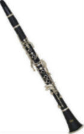

|
|
|
|
|
Hi there! My name is Matthew Albanese. I am currently a senior at URI, on the CSC BA track.
The University of Rhode Island has had a great impact on my life as a person all around.
Ever since coming to college, I've grown in multiple areas of my life.
I have 4 siblings, all of which are older than me. They have each graduated college, so I'm last in line.
I have earned a black belt rank in Ronin Kempo Karate, back in Lincoln, RI.
I like to play the Clarinet, I like to run, and play video games.
I am a Christian, and the student president of Rhody Christian Fellowship (RCF) on the URI campus.
I am an avid sports fan as well; I have played Volleyball all throughout highschool, and baseball when I was younger.
